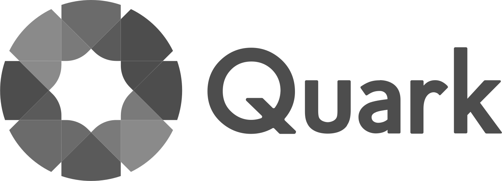
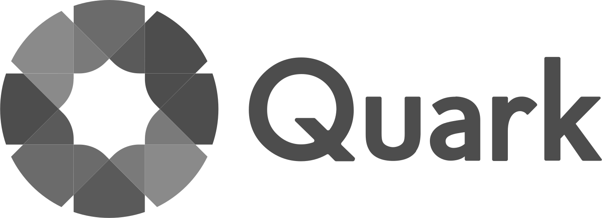

Product UX Planning & Design Engineering
Every new medium deserves a new interface.
I design products at the convergence of hardware, software, and AI — where the interface must honor the sense it serves.
McLuhan saw that every technology extends a human sense. AI extends thought itself — and demands an entirely new kind of interface.
間 · 朱 · 雪
Career History経歴
2023 – Present
AI Systems思考
TDK → Design Engineering
Edge AI sensors at TDK (CES 2024 Innovation Award). Then Fabrion — designing the first AI-native MES where AI agents earn human trust through transparency, guardrails, and constitutional AI principles.

2022 – 2023
Agency & Consulting知覚
Ogilvy → Slalom
Generative visuals, spatial audio, and AR for Audi at Ogilvy Japan. Then innovation strategy at Slalom Build — experience design for Toyota Woven City, Gundam Metaverse, and NVIDIA collaborations.
2017 – 2021
Premium Audio聴覚
Director of UX — Denon / Marantz
Unified the UX of two premium audio brands across 60+ products and 50+ Apple-certified devices. Replaced 8-bit bitmap displays with a modern vector design system. Moved market position from #5 to #1.

2011 – 2013
Hardware Invention触感
Miselu C.24
Patented a BLE MIDI controller that cut Android audio latency from 250ms to under 10ms. Demoed at Google I/O 2012 and TechCrunch Disrupt. Partnerships with KORG and Yamaha.
2007 – 2016
Music & Live Performance流動
Beatport → Native Instruments
Digital music distribution, DJ software, and real-time generative visuals. VJ performances at EDC, Ultra, Detroit Movement, Burning Man, and Further Future.

1999 – 2007
Print & Digital Publishing視覚
QuarkXPress
Joined when QuarkXPress held 95% of global publishing — Forbes, Condé Nast, NYT, Rolling Stone. Pioneered Quark Interactive Designer, a JavaScript-native non-coding authoring tool.
Twenty-five years designing at the intersection of hardware, software, and AI. From publishing to DJ tools, premium audio to immersive experiences, and now AI-native systems — each chapter extended a different human sense.


 
